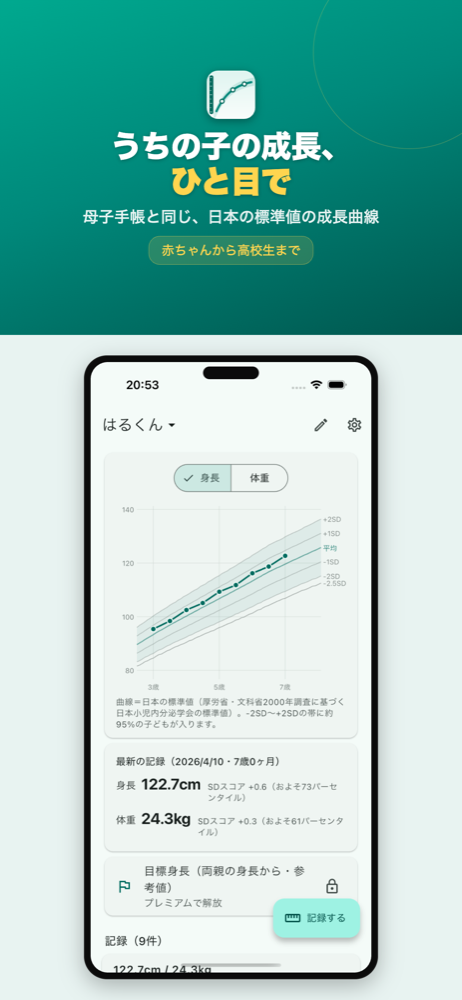
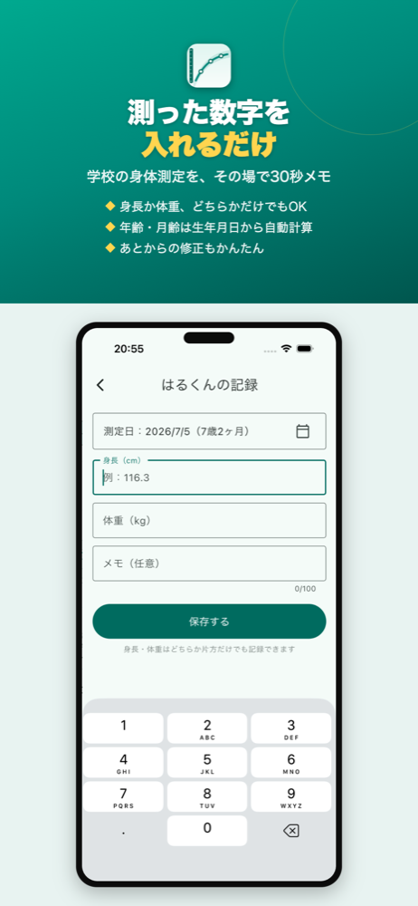
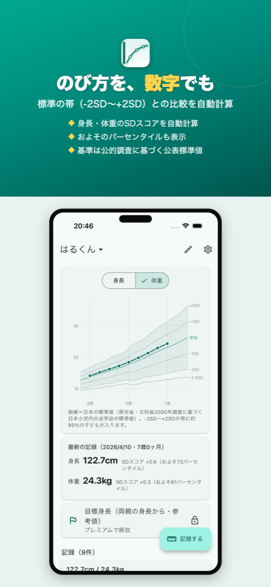
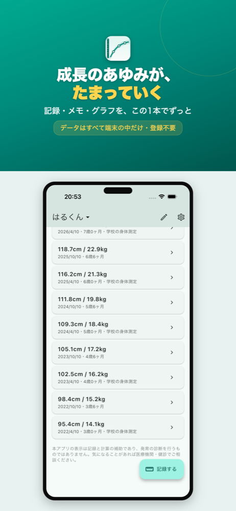
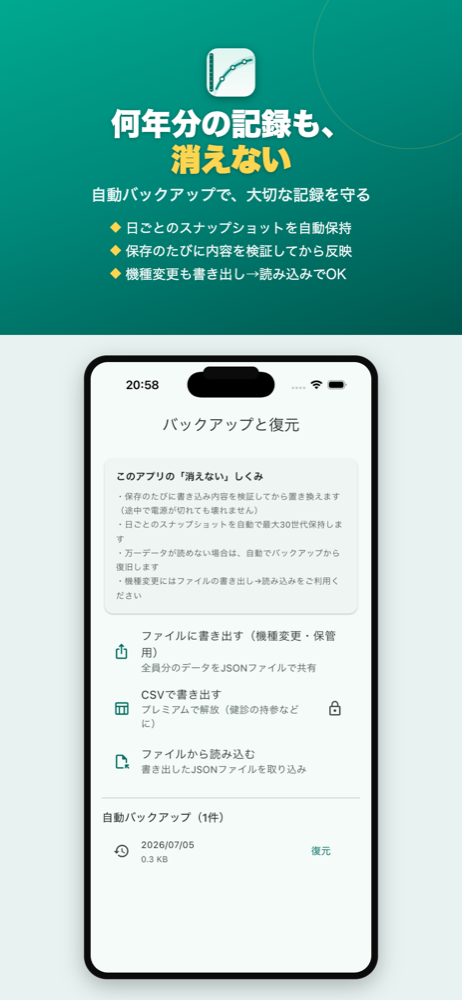

学校や健診の測定結果をメモするだけで、
母子手帳と同じ日本の標準値の成長曲線に
重ねてグラフで確認できます。





学校や健診でもらった数字をそのまま
日本の標準値の帯（-2SD〜+2SD）の上に表示
SDスコアとおおよそのパーセンタイルを自動計算
母子手帳や学校保健で使われている日本の標準値（0歳〜17歳6ヶ月）に、お子さんの記録を重ねて表示します。
標準の帯のどのあたりを通っているかを、SDスコアとおおよそのパーセンタイルで数値でも確認できます。
保存のたびの検証・日ごとの自動スナップショット・自動復旧の三重のしくみで、何年分の記録も守ります。
件数無制限で記録でき、あとからの修正やメモの追記も自由。ファイル書き出しで機種変更にも対応します。
2人目以降のお子さんも記録できます
健診・受診時の持参や印刷に
両親の身長から一般式で計算します
※ 1人分の記録・成長曲線グラフ・SDスコア・自動バックアップは
無料でご利用いただけます。月額課金はありません。
名前・生年月日・身長・体重はすべて端末内にのみ保存されます
広告表示のためのトラッキングもありません
サーバーへの送信は一切ありません
無料でダウンロードして、これまでの記録もまとめて入れられます。
App Storeで無料ダウンロードiPhone対応 · 完全オフライン · 広告なし